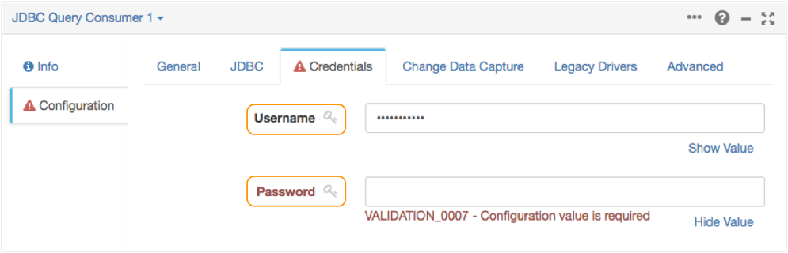

Credential Stores
Data Collector pipeline stages communicate with external systems to read and write data. Many of these external systems require credentials - user names or passwords - to access the data. When you configure pipeline stages for these external systems, you define the credentials that the stage uses to connect to the system.
If you enter credential values directly in stage properties, you expose the credentials to any user with access to the pipeline. To access external systems without exposing the credentials, define credentials in a credential store and then use the Data Collector credential functions in the stage properties to retrieve those values.
- CyberArk - Securely store credentials in CyberArk.
- Java keystore - Securely store credentials in a Java keystore file.
- Vault - Securely store credentials in Hashicorp Vault.
You can configure a Data Collector to use multiple credential stores at the same time. Each credential store is identified by a unique ID.
Group Access to Credentials
When you use credential functions in a pipeline, you can further secure the credential values by allowing only a specific group the ability to validate, preview, or run the pipeline.
The credential functions include a group argument that defines the group that can access the credential. Only users that have execute permission on the pipeline and that belong to this group can validate, preview, or run the pipeline that retrieves the credential values.
When working only with Data Collector,
simply specify the group name, such as "devops". When working with Control Hub,
specify the group using the required naming convention: <group
ID>@<organization ID>. For example, "devops@MyCompany".
If you do not want to restrict access to the credentials, specify the default "all" group when working only with Data Collector or the default "all@<organization ID>" group when working with Control Hub.
CyberArk Credential Store
To use the CyberArk credential store system, install the CyberArk credential store stage library and define the configuration properties used to connect to CyberArk Application Identity Manager. Then, use credential functions in pipeline stage properties to retrieve the credential values.
Step 1. Install the Credential Store Stage Library
By default, a full Data Collector installation includes the CyberArk credential store stage library. The core installation does not include the library.
To verify that a Data Collector
has the CyberArk credential store stage library installed, click the Package Manager
icon ( ) to display the list of installed stage libraries. If the library is not installed,
install the
library before configuring the CyberArk credential store.
) to display the list of installed stage libraries. If the library is not installed,
install the
library before configuring the CyberArk credential store.
Step 2. Configure the Credential Store Properties
$SDC_CONF/credential-stores.properties file.credentialStores=cyberark- Uncomment the
credentialStoresproperty in the file.If enabling only the CyberArk credential store, set the property to "cyberark". If enabling multiple credential stores, set the property to each credential store type. For example, to use both the Java keystore and the CyberArk credential stores, set the value to "jks,cyberark".
- Configure the following properties in the CyberArk Credential Store section of
the file.
The CyberArk credential store definition, web service URL, and application ID are required properties. Uncomment and configure other properties as needed.
The file includes the following properties:
CyberArk Property Description credentialStore.cyberark.def Required. Defines the implementation of the CyberArk credential store. Do not change the default value.
credentialStore.cyberark.config.credential.refresh.millis Optional. Number of milliseconds that Data Collector locally caches a credential. When the time expires, Data Collector retrieves the credential from CyberArk. credentialStore.cyberark.config.credential.retry.millis Optional. Number of milliseconds that Data Collector waits before attempting to retry a retrieval of a credential from CyberArk, in the case of an error. credentialStore.cyberark.config.connector Optional. Connector type to CyberArk. Leave the default of “webservices” since only web services is currently supported. credentialStore.cyberark.config.ws.url Required. CyberArk Central Credential Provider web service URL. Use the following format:
https://<host name>:<port>/AIMWebService/api/AccountscredentialStore.cyberark.config.ws.appId Required. CyberArk application ID for this Data Collector. You must create the application ID in CyberArk. credentialStore.cyberark.config.ws.maxConcurrentConnections Optional. Maximum number of concurrent web service calls that Data Collector can make to CyberArk. credentialStore.cyberark.config.ws.validateAfterInactivity.millis Optional. Number of milliseconds of inactivity before Data Collector validates the HTTP connection to CyberArk. credentialStore.cyberark.config.ws.connectionTimeout.millis Optional. Number of milliseconds to wait for a connection to CyberArk. credentialStore.cyberark.config.ws.nameSeparator Optional. Separator to use for the CyberArk safe, folder, object name, and element name values in the credential name argument used by the credential functions. Use the following format for the name argument:<safe><separator><folder><separator><object name><separator><element name>For example, if you keep the default ampersand (&), the format for the name argument is:<safe>&<folder>&<object name>&<element name>credentialStore.cyberark.config.ws.http.authentication Optional. Authentication type used by the CyberArk Central Credential Provider web services: none, basic, or digest. Default is none.
credentialStore.cyberark.config.ws.http.authentication.user Optional. Username if using basic or digest authentication. credentialStore.cyberark.config.ws.http.authentication.password Optional. Password if using basic or digest authentication. credentialStore.cyberark.config.ws.truststoreFile Optional. Path to the truststore file if using HTTPS and the server certificate is using a private CA or is not trusted by the Java default truststore file. Enter a path relative to the Data Collector configuration directory,
$SDC_CONF, or enter an absolute path.credentialStore.cyberark.config.ws.truststorePassword Optional. Password for the truststore file. credentialStore.cyberark.config.ws.supportedProtocols Optional. SSL/TLS-enabled protocols. Versions TLSv1.2 or later are recommended. credentialStore.cyberark.config.ws.hostnameVerifier.skip Optional. Determines whether the host name of the CyberArk Central Credential Provider web services should be verified against the domain defined in the HTTPS certificate. By default, the host name is verified.
credentialStore.cyberark.config.ws.keystoreFile Optional. If using HTTPS and the CyberArk Central Credential Provider web services requires client side certificates, the path to the keystore file that contains the client certificate. Enter a path relative to the Data Collector configuration directory,
$SDC_CONF, or enter an absolute path.credentialStore.cyberark.config.ws.keystorePassword Optional. Password for the keystore file. credentialStore.cyberark.config.ws.keyPassword Optional. Password to access the certificate within the keystore file. - Restart Data Collector to enable the changes.
Step 3. Call the Credentials from the Pipeline
Use the credential:get() or
credential:getWithOptions() function in pipeline stage properties to
retrieve credential values from CyberArk.
Use the credential functions in any stage property that displays the key icon next to it. For example:

- storeId - Unique ID of the credential store to use. Enter "cyberark" to access the CyberArk credential store.
- group - Group to which a user must belong before that user
can access the credential. Only users that have execute permission on the pipeline
and that belong to this group can validate, preview, or run the pipeline that
retrieves the credential values.
If working with Control Hub, specify the group using the required naming convention:
<group ID>@<organization ID>. To grant access to all users, specify the default "all" group when working only with Data Collector or the default "all@<organization ID>" group when working with Control Hub. - credential name - Name of the credential value to retrieve from CyberArk. Use
the following format:
"<safe><separator><folder><separator><object name><separator><element name>", where:<safe>is the CyberArk safe to read. For example, "production".<separator>is the separator defined for the safe, folder, object name, and element name values in the$SDC_CONF/credential-stores.propertiesfile. Or if you use thecredential:getWithOptions()function, you can define the separator in the options argument.<folder>is the folder in CyberArk to read. For example, "Root\\sqldatabases".<object name>is the object in CyberArk to read. For example, "payroll".<element name>is the name for the value that you want returned. For example, "Content" to return the password. Or "Username" to return an optional user name value. If you do not specify<element name>in the credential name argument, Data Collector uses "Content".
- options - Used only by the
credential:getWithOptions()function. Additional options to communicate with the credential store. For CyberArk, you can use the following options:separator- Separator to use for the credential name.ConnectionTimeout- Connection timeout value in milliseconds.FailRequestOnPasswordChange- Whether to fail the request on a password change, set to true or false. See the CyberArk documentation for details on this option.
Use the following format to specify options:"<option1>=<value>,<option2>=<value>"For example, to use the pipe symbol (|) as the separator, enter the following for the options argument:"separator=|"
${credential:get("cyberark", "devops", "production&Root\\sqldatabases&payroll&Content")}${credential:getWithOptions("cyberark", "devops", "production|Root\\sqldatabases|payroll|Content", "separator=|")}Java Keystore Credential Store
To use the Java keystore credential store system, install the Java keystore credential store stage library and define the configuration properties used to connect to the credential store.
jks-cs command to add
credentials to the credential store. Then, use credential functions in pipeline stage
properties to retrieve the credential values.Step 1. Install the Credential Store Stage Library
By default, a full Data Collector installation includes the Java keystore credential store stage library. The core installation does not include the library.
To verify that a Data Collector
has the Java keystore credential store stage library installed, click the Package
Manager icon ( ) to display the list of installed stage libraries. If the
library is not installed, install the
library before configuring the Java keystore credential store.
) to display the list of installed stage libraries. If the
library is not installed, install the
library before configuring the Java keystore credential store.
Step 2. Configure the Credential Store Properties
To enable Data Collector to
connect to the Java keystore credential store, configure the Java keystore properties in
the $SDC_CONF/credential-stores.properties file.
credentialStores=jks- Uncomment the
credentialStoresproperty in the file.If enabling only the Java keystore credential store, set the property to "jks". If enabling multiple credential stores, set the property to each credential store type. For example, to use both the Java keystore and the Vault credential stores, set the value to "jks,vault".
- Configure the following properties in the Java Keystore Credential Store section of
the file:
Java Keystore Property Description credentialStore.jks.def Defines the implementation of the Java Keystore credential store. Do not change the default value.
credentialStore.jks.config.keystore.type Format of the Java keystore file: - JCEKS
- PKCS12
Default is PKCS12.
credentialStore.jks.config.keystore.file Path and name of the Java keystore file. Enter an absolute path to the file, or a path relative to the Data Collector configuration directory, $SDC_CONF.Default is
jks-credentialStore.pkcs12.credentialStore.jks.config.keystore.storePassword Password that Data Collector uses to access the Java keystore file. You must change the default value before using the keystore file.
- Restart Data Collector to enable the changes.
Step 3. Add Credentials to the Credential Store
Use the jks-cs add command to add credentials to the Java keystore
file. You can add multiple credentials to the file.
$SDC_DIST directory as
follows:bin/streamsets jks-cs add -i <storeId> -n <credential name> -c <credential value>bin/streamsets jks-cs add -i jks -n OracleDBPassword -c 278yT6udelete and list
subcommands that you use to manage the credentials defined in the keystore file. For
information on using these commands, see jks-cs Command. Step 4. Call the Credentials from the Pipeline
Use the credential:get() function in pipeline stage properties to
retrieve credential values from the Java keystore.
Use the credential function in any stage property that displays the key icon next to it. For example:
credential:get() function uses the following arguments:- storeId - Unique ID of the credential store to use. Enter "jks" to access the Java keystore credential store.
- group - Group to which a user must belong before that user
can access the credential. Only users that have execute permission on the pipeline
and that belong to this group can validate, preview, or run the pipeline that
retrieves the credential values.
If working with Control Hub, specify the group using the required naming convention:
<group ID>@<organization ID>. To grant access to all users, specify the default "all" group when working only with Data Collector or the default "all@<organization ID>" group when working with Control Hub. - credential name - Name of the credential value to retrieve from the credential store.
${credential:get("jks", "devops", "OracleDBPassword")}jks-cs Command
The jks-cs command provides subcommands to add, list, and delete
credentials in the Java keystore credential store.
Any changes made to the Java keystore file take effect immediately. For example, if you change the value of an existing credential in the file, running pipelines that require a new connection to the external system use the new credential value.
jks-cs command:- add
- Adds a credential to the Java keystore credential store.
- delete
- Deletes a credential from the Java keystore credential store.
- list
- Lists the names of all credentials defined in the Java keystore credential store. The command does not list the credential values.
Vault Credential Store
To use the Vault credential store system, install the Vault credential store stage library and define the configuration properties used to connect to Vault. Then, use credential functions in pipeline stage properties to retrieve the credential values.
Step 1. Install the Credential Store Stage Library
By default, a full Data Collector installation includes the Vault keystore credential store stage library. The core installation does not include the library.
To verify that a Data Collector
has the Vault credential store stage library installed, click the Package Manager icon
( ) to display the list of installed stage libraries. If the library is not installed,
install the
library before configuring the Vault credential store.
) to display the list of installed stage libraries. If the library is not installed,
install the
library before configuring the Vault credential store.
Step 2. Configure the Credential Store Properties
To enable Data Collector to
connect to the Vault credential store, configure the Vault properties in the
$SDC_CONF/credential-stores.properties file.
credentialStores=vault- Uncomment the
credentialStoresproperty in the file.If enabling only the Vault credential store, set the property to "vault". If enabling multiple credential stores, set the property to each credential store type. For example, to use both the Java keystore and the Vault credential stores, set the value to "jks,vault".
- Configure the following properties in the Hashicorp Vault Credential Store section
of the file.
The Vault credential store definition, server URL, Role ID, and Secret ID are required properties. Configure other properties as needed:
Vault Property Description credentialStore.vault.def Required. Defines the implementation of the Vault credential store. Do not change the default value.
credentialStore.vault.config.pathKey.separator Optional. Separator to use for the path and key values in the credential name argument used by the credential functions. You use the following format for the name argument:<path><separator><key>For example, if you keep the default ampersand (&), the format for the name argument is:<path>&<key>credentialStore.vault.config.addr Required. Vault server URL entered in the following format: https://<host name>:<port number>Use HTTPS to avoid unencrypted communication.
credentialStore.vault.config.role.id Required. Vault Role ID that Data Collector uses to authenticate with Vault. The Role ID is configured within Vault by your Vault administrator. The Data Collector Vault integration relies on Vault's App Role authentication backend.Important: The App ID authentication backend has been deprecated by Hashicorp and will be removed in a future release. As a result, do not configure thecredentialStore.vault.config.app.idproperty for new installations.credentialStore.vault.config.secret.id Required. Vault Secret ID that Data Collector uses to authenticate with Vault. The Secret ID is configured within Vault by your Vault administrator. Enter one of the following:- Secret ID value.
- File that contains the Secret ID value. For increased security, store the Secret ID in
a separate file and reference the file in the
$SDC_CONF/credential-stores.propertiesfile as follows: ${file("<filename>")}.By default, the file name is
vault-secret-idand expected in the $SDC_CONF directory. For more information, see Referencing Sensitive Values in Files.
credentialStore.vault.config.lease.renewal.interval.sec Optional. Seconds to wait before checking for leases that need renewal. Default is 60.
credentialStore.vault.config.lease.expiration.buffer.sec Optional. Buffer for expiring leases. Data Collector renews leases that expire in less than the specified number of seconds. Default is 120.
credentialStore.vault.config.open.timeout Optional. Timeout to establish an HTTP connection to Vault in milliseconds. Default is 0 for no limit.
credentialStore.vault.config.proxy.address Optional. Proxy URL. Configure to use a proxy to access Vault. credentialStore.vault.config.proxy.port Optional. Proxy port. Configure to use a proxy to access Vault. credentialStore.vault.config.proxy.username Optional. Proxy username. Configure to use a proxy to access Vault. credentialStore.vault.config.proxy.password Optional. Proxy password. Configure to use a proxy to access Vault. credentialStore.vault.config.read.timeout Optional. Milliseconds to wait for data before timing out. Default is 0 for no limit.
credentialStore.vault.config.ssl.enabled.protocols Optional. SSL/TLS-enabled protocols. Versions TLSv1.2 or later are recommended. Default is TLSv1.2,TLSv1.3.
credentialStore.vault.config.ssl.truststore.file Optional. Path to a Java truststore file. Required when using a private CA or certificates not trusted by the Java default truststore. credentialStore.vault.config.ssl.truststore.password Optional. Password for the truststore file. credentialStore.vault.config.ssl.verify Optional. Whether to verify that the Vault server hostname matches its certificate. Default is true. False is not recommended.
credentialStore.vault.config.ssl.timeout Optional. Timeout for the SSL/TLS handshake in milliseconds. Default is 0 for no limit.
credentialStore.vault.config.timeout Optional. Timeout to read from Vault in milliseconds, after a connection has been established. Default is 0 for no limit.
- Restart Data Collector to enable the changes.
Step 3. Call the Credentials from the Pipeline
Use the credential:get() or
credential:getWithOptions() function in pipeline stage properties to
retrieve credential values from Vault.
Use the credential functions in any stage property that displays the key icon next to it. For example:
- storeId - Unique ID of the credential store to use. Enter "vault" to access the Vault credential store.
- group - Group to which a user must belong before that user
can access the credential. Only users that have execute permission on the pipeline
and that belong to this group can validate, preview, or run the pipeline that
retrieves the credential values.
If working with Control Hub, specify the group using the required naming convention:
<group ID>@<organization ID>. To grant access to all users, specify the default "all" group when working only with Data Collector or the default "all@<organization ID>" group when working with Control Hub. - credential name - Name of the credential value to retrieve from Vault. Use the
following format:
"<path><separator><key>", where:<path>is the path in Vault to read.<separator>is the separator defined for the path and key values in the$SDC_CONF/credential-stores.propertiesfile.<key>is the key for the value that you want returned.
- options - Used only by the
credential:getWithOptions()function. Additional options to communicate with the credential store. For Vault, you can enter a delay in milliseconds to allow time for external processing. Use the delay option when using the Vault AWS secret backend to generate AWS access credentials based on IAM policies. According to Vault documentation, you might need a delay of 10 seconds or more before the credentials can be used successfully.Use the following format to specify an option:
"<option>=<option>"For example, to set the Vault delay to 1,000 milliseconds, enter the following for the options argument:"delay=1000"
${credential:getWithOptions("vault", "devops", "/secret/databases/oracle&password", "delay=1000")}